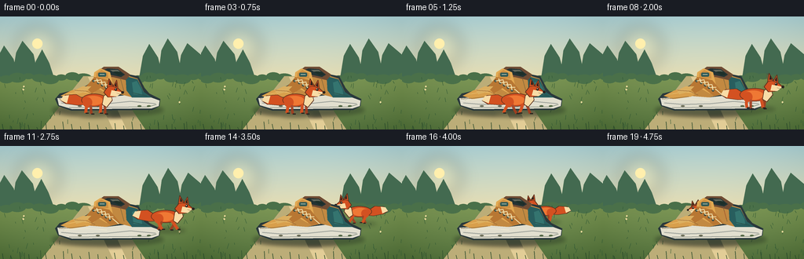
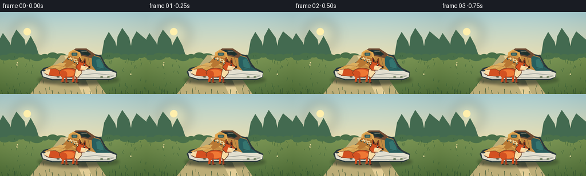
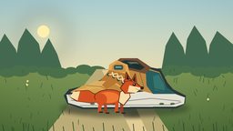
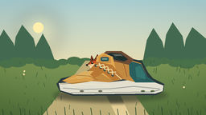

CODING AGENTS AS PIXEL WORLD MODELS
traex/GPT-5.6-Sol · dynamic_spatial_relationship_0028
点击播放 · 原生 RGB 像素
逐轮保存的候选
回放视频、检查图与代码变化。
每份候选均可单独播放。实际图片检查记录在下方工具轨迹中。
候选 01播放与检查图
点击播放 · 原生 RGB 像素

展开代码变化
--- 上一保存版本
+++ 本次保存版本
@@ -0,0 +1,277 @@
+from pathlib import Path
+import math
+import json
+import numpy as np
+from PIL import Image, ImageDraw, ImageFilter
+import artifact_io
+
+CASE_DIR = Path(__file__).resolve().parent
+SPEC = json.loads((CASE_DIR / 'task_spec.json').read_text())
+W, H, N = SPEC['width'], SPEC['height'], SPEC['frames']
+S = 4
+WS, HS = W*S, H*S
+
+# Coordinate helpers for supersampled vector drawing.
+def sp(v): return int(round(v*S))
+def box(b): return tuple(sp(v) for v in b)
+def poly(p): return [(sp(x), sp(y)) for x,y in p]
+def line(draw, p, fill, width=1, joint='curve'):
+ draw.line(poly(p), fill=fill, width=max(1,sp(width)), joint=joint)
+
+def ellipse(draw, b, fill, outline=None, width=1):
+ draw.ellipse(box(b), fill=fill, outline=outline, width=max(1,sp(width)))
+
+def polygon(draw, p, fill, outline=None):
+ draw.polygon(poly(p), fill=fill)
+ if outline:
+ draw.line(poly(p+[p[0]]), fill=outline, width=sp(0.8), joint='curve')
+
+def rounded(draw, b, radius, fill, outline=None, width=1):
+ draw.rounded_rectangle(box(b), radius=sp(radius), fill=fill, outline=outline, width=max(1,sp(width)))
+
+
+def make_background(frame_i):
+ # Quiet cinematic sky/earth gradient, consistent across all frames.
+ yy = np.linspace(0, 1, HS)[:,None,None]
+ top = np.array([178,214,218], dtype=float)[None,None,:]
+ horizon = np.array([229,221,180], dtype=float)[None,None,:]
+ ground = np.array([93,123,71], dtype=float)[None,None,:]
+ horizon_y = .53
+ sky_t = np.clip(yy/horizon_y, 0, 1)
+ sky = top*(1-sky_t) + horizon*sky_t
+ earth_t = np.clip((yy-horizon_y)/(1-horizon_y),0,1)
+ earth = np.array([125,151,86],float)[None,None,:]*(1-earth_t)+ground*earth_t
+ arr = np.where(yy<horizon_y, sky, earth)
+ arr = np.repeat(arr, WS, axis=1)
+ # Gentle vignette.
+ xs = np.linspace(-1,1,WS)[None,:,None]
+ ys = np.linspace(-1,1,HS)[:,None,None]
+ vig = np.clip((xs*xs + ys*ys)*10,0,18)
+ arr = np.clip(arr-vig,0,255).astype(np.uint8)
+ im = Image.fromarray(arr, 'RGB').convert('RGBA')
+ d = ImageDraw.Draw(im, 'RGBA')
+
+ # Soft sun and haze.
+ glow = Image.new('RGBA',(WS,HS),(0,0,0,0)); gd=ImageDraw.Draw(glow,'RGBA')
+ ellipse(gd,(22,13,75,66),(255,237,173,70))
+ glow=glow.filter(ImageFilter.GaussianBlur(sp(10)))
+ im=Image.alpha_composite(im,glow); d=ImageDraw.Draw(im,'RGBA')
+ ellipse(d,(41,28,54,41),(255,239,173,180))
+
+ # Distant forest silhouettes.
+ distant=[(-8,78,24,37),(15,74,49,31),(40,80,69,42),(177,75,208,35),(201,72,233,28),(226,78,266,34)]
+ for idx,(x1,y1,x2,ytop) in enumerate(distant):
+ sway=0.5*math.sin(frame_i*.22+idx)
+ polygon(d,[(x1,79),(x1+5+sway,ytop+15),(x1+13+sway,ytop),(x2-7+sway,ytop+17),(x2,79)],(67,106,80,95))
+ # Far shrubs.
+ for i in range(20):
+ x=-6+i*14
+ y=78+2*math.sin(i*1.6)
+ r=7+(i%3)*2
+ ellipse(d,(x-r,y-r*.55,x+r,y+r*.55),(74,112,73,130))
+ # Curving path establishes depth.
+ polygon(d,[(106,76),(139,76),(185,144),(53,144)],(188,173,120,105))
+ polygon(d,[(112,77),(130,77),(161,144),(144,144)],(226,205,150,34))
+ # Fine grass and flowers, deterministic and mostly static.
+ rng=np.random.default_rng(9281)
+ for i in range(95):
+ x=float(rng.uniform(0,256)); y=float(rng.uniform(78,143))
+ if 58+0.72*(y-76) < x < 184-0.35*(y-76):
+ continue
+ h=float(rng.uniform(2,7)); lean=float(rng.uniform(-2,2))
+ phase=math.sin(frame_i*.25+x*.11)*.22
+ line(d,[(x,y),(x+lean+phase,y-h)],(47,87,52,110),.55)
+ if i%17==0:
+ ellipse(d,(x-1.1,y-h-1.3,x+1.1,y-h+.9),(242,220,158,175))
+ # Foreground grass shadows.
+ for x in range(4,256,11):
+ h=3+(x*7%8)
+ line(d,[(x,144),(x-1+math.sin(frame_i*.18+x)*.4,144-h)],(38,70,42,125),.7)
+ return im
+
+
+def draw_ground_shadows(im, fox_x, fox_base, fox_scale, behind, running):
+ layer=Image.new('RGBA',(WS,HS),(0,0,0,0)); d=ImageDraw.Draw(layer,'RGBA')
+ # Shoe's stable contact shadow.
+ ellipse(d,(66,111,208,127),(30,43,33,100))
+ # Fox shadow follows the depth plane.
+ fw=25*fox_scale*(1.15 if running else 1)
+ alpha=62 if behind else 78
+ ellipse(d,(fox_x-fw,fox_base-2.5,fox_x+fw,fox_base+4),(34,45,29,alpha))
+ layer=layer.filter(ImageFilter.GaussianBlur(sp(2.6)))
+ return Image.alpha_composite(im,layer)
+
+
+def draw_shoe(im):
+ # Oversized canvas sneaker, always stationary and rich in detail.
+ layer=Image.new('RGBA',(WS,HS),(0,0,0,0)); d=ImageDraw.Draw(layer,'RGBA')
+ # Outsole and heel silhouette.
+ polygon(d,[(70,105),(76,98),(93,94),(110,88),(121,78),(128,67),(151,66),
+ (166,74),(176,76),(184,91),(190,98),(204,105),(203,114),(194,119),
+ (91,120),(74,114)],(42,57,60,255))
+ # White midsole.
+ polygon(d,[(73,104),(89,103),(111,101),(135,103),(161,100),(184,100),(203,107),
+ (202,114),(193,117),(92,118),(75,113)],(226,223,207,255))
+ line(d,[(78,110),(102,112),(137,111),(166,108),(198,111)],(155,160,153,255),1.25)
+ line(d,[(88,116),(189,115),(199,112)],(104,113,112,180),.7)
+ # Main ochre/tan upper.
+ polygon(d,[(77,101),(91,94),(109,90),(120,80),(127,68),(150,67),(162,75),
+ (175,79),(183,96),(193,103),(169,103),(153,99),(135,103),(109,101),(89,105)],
+ (194,137,65,255))
+ # Toe panel.
+ polygon(d,[(77,101),(91,94),(111,91),(121,96),(112,102),(91,105)],(216,159,76,255))
+ line(d,[(84,99),(102,96),(116,97)],(237,188,105,210),1.1)
+ # Dark teal heel counter.
+ polygon(d,[(160,76),(175,80),(183,96),(193,103),(168,103),(161,94)],(40,94,94,255))
+ polygon(d,[(174,82),(180,93),(181,100),(170,99),(168,84)],(52,116,111,255))
+ line(d,[(169,97),(187,101)],(28,69,72,210),1)
+ # Collar/back opening with depth.
+ polygon(d,[(124,70),(132,64),(151,64),(166,74),(160,81),(143,77),(128,80)],(111,76,52,255))
+ polygon(d,[(130,69),(137,66),(150,67),(159,74),(154,77),(140,74)],(35,51,52,255))
+ polygon(d,[(140,68),(150,68),(157,74),(151,75)],(12,24,29,150))
+ # Tongue.
+ polygon(d,[(118,88),(120,71),(128,66),(140,71),(145,93),(136,98)],(226,169,82,255))
+ polygon(d,[(123,72),(129,68),(137,72),(138,79),(122,79)],(206,145,68,255))
+ rounded(d,(125,71.5,135,76.5),1.4,(46,89,87,255))
+ line(d,[(127,73.7),(133,73.7)],(222,221,189,240),.7)
+ # Eye stay overlays.
+ polygon(d,[(109,90),(120,77),(139,81),(153,98),(141,101),(128,91),(117,98)],(184,119,51,255))
+ # Lace holes and cream laces.
+ holes=[(119,82),(125,84.5),(130,87.3),(135,90.4),(140,94)]
+ for x,y in holes:
+ ellipse(d,(x-1.6,y-1.6,x+1.6,y+1.6),(43,66,64,255))
+ lace=(242,224,171,255)
+ for i in range(len(holes)-1):
+ x,y=holes[i]; nx,ny=holes[i+1]
+ line(d,[(x,y),(nx+4,ny-4)],lace,1.15)
+ line(d,[(x+4,y-3),(nx,ny)],lace,1.15)
+ line(d,[(143,92),(151,99)],lace,1)
+ # Side emblem and seams.
+ polygon(d,[(94,94),(105,89),(116,89),(109,96),(97,99)],(226,176,91,170))
+ line(d,[(95,94),(110,95),(121,100)],(146,90,42,190),.8)
+ line(d,[(153,78),(158,96)],(133,87,49,175),.8)
+ # Highlight and subtle dirt on sole.
+ line(d,[(80,107),(111,105),(136,107)],(255,246,219,175),.75)
+ for x in (101,124,177,189):
+ ellipse(d,(x-2,113,x+3,115),(100,108,102,65))
+ # Toe's thin foreground rim emphasizes occlusion at ending.
+ line(d,[(75,105),(91,104),(109,102)],(115,76,39,180),.7)
+ return Image.alpha_composite(im,layer)
+
+
+def fox_point(x,y,scale,direction, lx,ly):
+ return (x + direction*lx*scale, y + ly*scale)
+
+def fox_pts(x,y,scale,direction, arr):
+ return [fox_point(x,y,scale,direction,a,b) for a,b in arr]
+
+def fox_box(x,y,scale,direction,b):
+ p1=fox_point(x,y,scale,direction,b[0],b[1]); p2=fox_point(x,y,scale,direction,b[2],b[3])
+ return (min(p1[0],p2[0]),min(p1[1],p2[1]),max(p1[0],p2[0]),max(p1[1],p2[1]))
+
+
+def draw_fox(im, x, base, scale, direction, phase, running, alpha=255):
+ layer=Image.new('RGBA',(WS,HS),(0,0,0,0)); d=ImageDraw.Draw(layer,'RGBA')
+ def C(c): return (c[0],c[1],c[2],int(c[3]*alpha/255))
+ outline=C((91,47,28,255)); orange=C((211,81,33,255)); light=C((239,120,52,255)); cream=C((248,220,166,255)); dark=C((42,35,31,255))
+ # Tail sweeps behind the body and bobs during the run.
+ bob=1.2*math.sin(phase) if running else .8*math.sin(phase*.4)
+ tail=fox_pts(x,base,scale,direction,[(-13,-20),(-25,-27+bob),(-40,-26+bob),(-47,-19+bob),(-39,-14+bob),(-23,-12),(-11,-13)])
+ polygon(d,tail,orange,outline)
+ tip=fox_pts(x,base,scale,direction,[(-47,-19+bob),(-43,-25+bob),(-35,-26+bob),(-38,-15+bob)])
+ polygon(d,tip,cream)
+ # Running body stretches a little.
+ stretch=2.5 if running else 0
+ ellipse(d,fox_box(x,base,scale,direction,(-18-stretch,-28,18+stretch,-10)),orange,outline,0.8)
+ ellipse(d,fox_box(x,base,scale,direction,(-15,-25,12,-12)),light)
+ ellipse(d,fox_box(x,base,scale,direction,(-16,-23,-3,-9)),orange)
+ # Four readable legs with cycling stride.
+ if running:
+ a=math.sin(phase); b=math.sin(phase+math.pi)
+ legs=[(-11,-13,-12-8*a,-1,False),(-5,-12,-4-7*b,0,True),(9,-13,10+8*b,-1,False),(14,-14,14+8*a,0,True)]
+ else:
+ legs=[(-10,-13,-12,-1,False),(-5,-12,-4,0,True),(9,-13,8,-1,False),(14,-14,15,0,True)]
+ # Far legs first.
+ for sx,sy,ex,ey,far in [q for q in legs if q[4]]+[q for q in legs if not q[4]]:
+ col=C((162,61,31,230)) if far else orange
+ width=3.5 if far else 4.2
+ p0=fox_point(x,base,scale,direction,sx,sy)
+ knee=fox_point(x,base,scale,direction,(sx+ex)*.52,sy+(ey-sy)*.55)
+ foot=fox_point(x,base,scale,direction,ex,ey)
+ line(d,[p0,knee,foot],col,width*scale)
+ fp=fox_point(x,base,scale,direction,ex+direction*0,ey)
+ # Local x already flips via direction; paw extends in travel direction.
+ q=fox_point(x,base,scale,direction,ex+4,ey)
+ line(d,[fp,q],dark,1.7*scale)
+ # Chest ruff and neck.
+ polygon(d,fox_pts(x,base,scale,direction,[(13,-25),(22,-31),(25,-19),(17,-9),(11,-13)]),cream,outline)
+ # Fox head wedge with pointed muzzle.
+ polygon(d,fox_pts(x,base,scale,direction,[(13,-30),(20,-39),(31,-37),(39,-30),(30,-24),(19,-23)]),orange,outline)
+ # Tall ears, dark inner ear.
+ polygon(d,fox_pts(x,base,scale,direction,[(18,-37),(20,-49),(26,-39)]),orange,outline)
+ polygon(d,fox_pts(x,base,scale,direction,[(26,-38),(31,-47),(33,-35)]),orange,outline)
+ polygon(d,fox_pts(x,base,scale,direction,[(20.5,-40),(21.2,-46),(24,-40)]),dark)
+ polygon(d,fox_pts(x,base,scale,direction,[(28,-39),(30.5,-44),(31,-37)]),dark)
+ # White muzzle/cheek.
+ polygon(d,fox_pts(x,base,scale,direction,[(24,-33),(39,-30),(31,-24),(22,-25)]),cream)
+ ellipse(d,fox_box(x,base,scale,direction,(37.2,-31.6,41,-28.1)),dark)
+ # Eye with tiny catchlight.
+ ellipse(d,fox_box(x,base,scale,direction,(28,-35.5,31.5,-32)),dark)
+ ellipse(d,fox_box(x,base,scale,direction,(29,-35,30,-34)),C((255,244,207,255)))
+ # Facial contour and whiskers.
+ line(d,fox_pts(x,base,scale,direction,[(31,-29),(37,-27)]),C((108,61,40,170)),.45)
+ # Small motion lines, restrained and only while fully foreground.
+ return Image.alpha_composite(im,layer)
+
+
+def motion_state(i):
+ # 0-3: clear establishing hold in front. 4-13: sprint around heel.
+ # 14-19: recede and settle behind the shoe.
+ if i <= 3:
+ return 120.0 + .6*math.sin(i*.8), 124.0, .92, 1, False, False, i*.7
+ u=(i-4)/15.0
+ # Cubic Bezier around the right side of the shoe, then behind it.
+ p0=np.array([122.,124.]); p1=np.array([247.,125.]); p2=np.array([230.,80.]); p3=np.array([135.,102.])
+ q=(1-u)**3*p0+3*(1-u)**2*u*p1+3*(1-u)*u*u*p2+u**3*p3
+ # Direction follows the horizontal derivative.
+ der=3*(1-u)**2*(p1-p0)+6*(1-u)*u*(p2-p1)+3*u*u*(p3-p2)
+ direction=1 if der[0]>=0 else -1
+ # Perspective reduction once the fox rounds the heel.
+ recede=max(0,min(1,(u-.38)/.48))
+ recede=recede*recede*(3-2*recede)
+ scale=.92*(1-recede)+.69*recede
+ behind = i >= 14
+ return float(q[0]),float(q[1]),float(scale),direction,True,behind,(i-4)*2.4
+
+
+def render_frame(i):
+ x,base,scale,direction,running,behind,phase=motion_state(i)
+ im=make_background(i)
+ im=draw_ground_shadows(im,x,base,scale,behind,running)
+ # During the fast middle arc, a faint displaced silhouette creates natural motion blur.
+ if running and 6 <= i <= 12:
+ px,pbase,ps,pdir,_,_,pphase=motion_state(i-1)
+ dx=(px-x)*.18; dy=(pbase-base)*.18
+ im=draw_fox(im,x+dx,base+dy,scale,direction,phase-.35,True,alpha=30)
+ if behind:
+ im=draw_fox(im,x,base,scale,direction,phase,running)
+ im=draw_shoe(im) # decisive occlusion cue
+ else:
+ im=draw_shoe(im)
+ im=draw_fox(im,x,base,scale,direction,phase,running)
+ # A few foreground blades soften contact with the ground.
+ fg=Image.new('RGBA',(WS,HS),(0,0,0,0)); fd=ImageDraw.Draw(fg,'RGBA')
+ for j,xx in enumerate((13,31,52,219,238,249)):
+ h=5+(j*3)%7
+ line(fd,[(xx,144),(xx+math.sin(i*.18+j)*.6,144-h)],(34,67,41,160),.75)
+ im=Image.alpha_composite(im,fg)
+ return np.asarray(im.convert('RGB').resize((W,H),Image.Resampling.LANCZOS),dtype=np.uint8)
+
+
+def main():
+ frames=np.stack([render_frame(i) for i in range(N)],axis=0)
+ assert frames.shape==(N,H,W,3) and frames.dtype==np.uint8
+ artifact_io.save(frames,CASE_DIR)
+
+if __name__=='__main__':
+ main()
候选 02播放与检查图
点击播放 · 原生 RGB 像素


展开代码变化
--- 上一保存版本
+++ 本次保存版本
@@ -48,7 +48,7 @@
ys = np.linspace(-1,1,HS)[:,None,None]
vig = np.clip((xs*xs + ys*ys)*10,0,18)
arr = np.clip(arr-vig,0,255).astype(np.uint8)
- im = Image.fromarray(arr, 'RGB').convert('RGBA')
+ im = Image.fromarray(arr).convert('RGBA')
d = ImageDraw.Draw(im, 'RGBA')
# Soft sun and haze.
可观测工具轨迹
实际执行的命令与返回图片。
命令 1exit 0
/bin/bash -lc "cat prompt.txt && printf '\\n--- GENERATION_RULES ---\\n' && cat GENERATION_RULES.md"
命令 2exit 0
/bin/bash -lc "cat task_spec.json && printf '\\n--- FILES ---\\n' && find . -maxdepth 2 -type f -printf '%p\\n' | sort"
命令 3exit 0
/bin/bash -lc "command -v ffmpeg; command -v python3; python3 - <<'PY' mods=['PIL','numpy','cv2','imageio','matplotlib'] for m in mods: try: x=__import__(m); print(m,'OK',getattr(x,'__version__','')) except Exception as e: print(m,'NO',e) PY"
命令 4exit 0
/bin/bash -lc 'cat artifact_io.py'
命令 5exit 0
/bin/bash -lc "cat > generate.py <<'PY'
from pathlib import Path
import math
import json
import numpy as np
from PIL import Image, ImageDraw, ImageFilter
import artifact_io
CASE_DIR = Path(__file__).resolve().parent
SPEC = json.loads((CASE_DIR / 'task_spec.json').read_text())
W, H, N = SPEC['width'], SPEC['height'], SPEC['frames']
S = 4
WS, HS = W*S, H*S
# Coordinate helpers for supersampled vector drawing.
def sp(v): return int(round(v*S))
def box(b): return tuple(sp(v) for v in b)
def poly(p): return [(sp(x), sp(y)) for x,y in p]
def line(draw, p, fill, width=1, joint='curve'):
draw.line(poly(p), fill=fill, width=max(1,sp(width)), joint=joint)
def ellipse(draw, b, fill, outline=None, width=1):
draw.ellipse(box(b), fill=fill, outline=outline, width=max(1,sp(width)))
def polygon(draw, p, fill, outline=None):
draw.polygon(poly(p), fill=fill)
if outline:
draw.line(poly(p+[p[0]]), fill=outline, width=sp(0.8), joint='curve')
def rounded(draw, b, radius, fill, outline=None, width=1):
draw.rounded_rectangle(box(b), radius=sp(radius), fill=fill, outline=outline, width=max(1,sp(width)))
def make_background(frame_i):
# Quiet cinematic sky/earth gradient, consistent across all frames.
yy = np.linspace(0, 1, HS)[:,None,None]
top = np.array([178,214,218], dtype=float)[None,None,:]
horizon = np.array([229,221,180], dtype=float)[None,None,:]
ground = np.array([93,123,71], dtype=float)[None,None,:]
horizon_y = .53
sky_t = np.clip(yy/horizon_y, 0, 1)
sky = top*(1-sky_t) + horizon*sky_t
earth_t = np.clip((yy-horizon_y)/(1-horizon_y),0,1)
earth = np.array([125,151,86],float)[None,None,:]*(1-earth_t)+ground*earth_t
arr = np.where(yy<horizon_y, sky, earth)
arr = np.repeat(arr, WS, axis=1)
# Gentle vignette.
xs = np.linspace(-1,1,WS)[None,:,None]
ys = np.linspace(-1,1,HS)[:,None,None]
vig = np.clip((xs*xs + ys*ys)*10,0,18)
arr = np.clip(arr-vig,0,255).astype(np.uint8)
im = Image.fromarray(arr, 'RGB').convert('RGBA')
d = ImageDraw.Draw(im, 'RGBA')
# Soft sun and haze.
glow = Image.new('RGBA',(WS,HS),(0,0,0,0)); gd=ImageDraw.Draw(glow,'RGBA')
ellipse(gd,(22,13,75,66),(255,237,173,70))
glow=glow.filter(ImageFilter.GaussianBlur(sp(10)))
im=Image.alpha_composite(im,glow); d=ImageDraw.Draw(im,'RGBA')
ellipse(d,(41,28,54,41),(255,239,173,180))
# Distant forest silhouettes.
distant=[(-8,78,24,37),(15,74,49,31),(40,80,69,42),(177,75,208,35),(201,72,233,28),(226,78,266,34)]
for idx,(x1,y1,x2,ytop) in enumerate(distant):
sway=0.5*math.sin(frame_i*.22+idx)
polygon(d,[(x1,79),(x1+5+sway,ytop+15),(x1+13+sway,ytop),(x2-7+sway,ytop+17),(x2,79)],(67,106,80,95))
# Far shrubs.
for i in range(20):
x=-6+i*14
y=78+2*math.sin(i*1.6)
r=7+(i%3)*2
ellipse(d,(x-r,y-r*.55,x+r,y+r*.55),(74,112,73,130))
# Curving path establishes depth.
polygon(d,[(106,76),(139,76),(185,144),(53,144)],(188,173,120,105))
polygon(d,[(112,77),(130,77),(161,144),(144,144)],(226,205,150,34))
# Fine grass and flowers, deterministic and mostly static.
rng=np.random.default_rng(9281)
for i in range(95):
x=float(rng.uniform(0,256)); y=float(rng.uniform(78,143))
if 58+0.72*(y-76) < x < 184-0.35*(y-76):
continue
h=float(rng.uniform(2,7)); lean=float(rng.uniform(-2,2))
phase=math.sin(frame_i*.25+x*.11)*.22
line(d,[(x,y),(x+lean+phase,y-h)],(47,87,52,110),.55)
if i%17==0:
ellipse(d,(x-1.1,y-h-1.3,x+1.1,y-h+.9),(242,220,158,175))
# Foreground grass shadows.
for x in range(4,256,11):
h=3+(x*7%8)
line(d,[(x,144),(x-1+math.sin(frame_i*.18+x)*.4,144-h)],(38,70,42,125),.7)
return im
def draw_ground_shadows(im, fox_x, fox_base, fox_scale, behind, running):
layer=Image.new('RGBA',(WS,HS),(0,0,0,0)); d=ImageDraw.Draw(layer,'RGBA')
# Shoe's stable contact shadow.
ellipse(d,(66,111,208,127),(30,43,33,100))
# Fox shadow follows the depth plane.
fw=25*fox_scale*(1.15 if running else 1)
alpha=62 if behind else 78
ellipse(d,(fox_x-fw,fox_base-2.5,fox_x+fw,fox_base+4),(34,45,29,alpha))
layer=layer.filter(ImageFilter.GaussianBlur(sp(2.6)))
return Image.alpha_composite(im,layer)
def draw_shoe(im):
# Oversized canvas sneaker, always stationary and rich in detail.
layer=Image.new('RGBA',(WS,HS),(0,0,0,0)); d=ImageDraw.Draw(layer,'RGBA')
# Outsole and heel silhouette.
polygon(d,[(70,105),(76,98),(93,94),(110,88),(121,78),(128,67),(151,66),
(166,74),(176,76),(184,91),(190,98),(204,105),(203,114),(194,119),
(91,120),(74,114)],(42,57,60,255))
# White midsole.
polygon(d,[(73,104),(89,103),(111,101),(135,103),(161,100),(184,100),(203,107),
(202,114),(193,117),(92,118),(75,113)],(226,223,207,255))
line(d,[(78,110),(102,112),(137,111),(166,108),(198,111)],(155,160,153,255),1.25)
line(d,[(88,116),(189,115),(199,112)],(104,113,112,180),.7)
# Main ochre/tan upper.
polygon(d,[(77,101),(91,94),(109,90),(120,80),(127,68),(150,67),(162,75),
(175,79),(183,96),(193,103),(169,103),(153,99),(135,103),(109,101),(89,105)],
(194,137,65,255))
# Toe panel.
polygon(d,[(77,101),(91,94),(111,91),(121,96),(112,102),(91,105)],(216,159,76,255))
line(d,[(84,99),(102,96),(116,97)],(237,188,105,210),1.1)
# Dark teal heel counter.
polygon(d,[(160,76),(175,80),(183,96),(193,103),(168,103),(161,94)],(40,94,94,255))
polygon(d,[(174,82),(180,93),(181,100),(170,99),(168,84)],(52,116,111,255))
line(d,[(169,97),(187,101)],(28,69,72,210),1)
# Collar/back opening with depth.
polygon(d,[(124,70),(132,64),(151,64),(166,74),(160,81),(143,77),(128,80)],(111,76,52,255))
polygon(d,[(130,69),(137,66),(150,67),(159,74),(154,77),(140,74)],(35,51,52,255))
polygon(d,[(140,68),(150,68),(157,74),(151,75)],(12,24,29,150))
# Tongue.
polygon(d,[(118,88),(120,71),(128,66),(140,71),(145,93),(136,98)],(226,169,82,255))
polygon(d,[(123,72),(129,68),(137,72),(138,79),(122,79)],(206,145,68,255))
rounded(d,(125,71.5,135,76.5),1.4,(46,89,87,255))
line(d,[(127,73.7),(133,73.7)],(222,221,189,240),.7)
# Eye stay overlays.
polygon(d,[(109,90),(120,77),(139,81),(153,98),(141,101),(128,91),(117,98)],(184,119,51,255))
# Lace holes and cream laces.
holes=[(119,82),(125,84.5),(130,87.3),(135,90.4),(140,94)]
for x,y in holes:
ellipse(d,(x-1.6,y-1.6,x+1.6,y+1.6),(43,66,64,255))
lace=(242,224,171,255)
for i in range(len(holes)-1):
x,y=holes[i]; nx,ny=holes[i+1]
line(d,[(x,y),(nx+4,ny-4)],lace,1.15)
line(d,[(x+4,y-3),(nx,ny)],lace,1.15)
line(d,[(143,92),(151,99)],lace,1)
# Side emblem and seams.
polygon(d,[(94,94),(105,89),(116,89),(109,96),(97,99)],(226,176,91,170))
line(d,[(95,94),(110,95),(121,100)],(146,90,42,190),.8)
line(d,[(153,78),(158,96)],(133,87,49,175),.8)
# Highlight and subtle dirt on sole.
line(d,[(80,107),(111,105),(136,107)],(255,246,219,175),.75)
for x in (101,124,177,189):
ellipse(d,(x-2,113,x+3,115),(100,108,102,65))
# Toe's thin foreground rim emphasizes occlusion at ending.
line(d,[(75,105),(91,104),(109,102)],(115,76,39,180),.7)
return Image.alpha_composite(im,layer)
def fox_point(x,y,scale,direction, lx,ly):
return (x + direction*lx*scale, y + ly*scale)
def fox_pts(x,y,scale,direction, arr):
return [fox_point(x,y,scale,direction,a,b) for a,b in arr]
def fox_box(x,y,scale,direction,b):
p1=fox_point(x,y,scale,direction,b[0],b[1]); p2=fox_point(x,y,scale,direction,b[2],b[3])
return (min(p1[0],p2[0]),min(p1[1],p2[1]),max(p1[0],p2[0]),max(p1[1],p2[1]))
def draw_fox(im, x, base, scale, direction, phase, running, alpha=255):
layer=Image.new('RGBA',(WS,HS),(0,0,0,0)); d=ImageDraw.Draw(layer,'RGBA')
def C(c): return (c[0],c[1],c[2],int(c[3]*alpha/255))
outline=C((91,47,28,255)); orange=C((211,81,33,255)); light=C((239,120,52,255)); cream=C((248,220,166,255)); dark=C((42,35,31,255))
# Tail sweeps behind the body and bobs during the run.
bob=1.2*math.sin(phase) if running else .8*math.sin(phase*.4)
tail=fox_pts(x,base,scale,direction,[(-13,-20),(-25,-27+bob),(-40,-26+bob),(-47,-19+bob),(-39,-14+bob),(-23,-12),(-11,-13)])
polygon(d,tail,orange,outline)
tip=fox_pts(x,base,scale,direction,[(-47,-19+bob),(-43,-25+bob),(-35,-26+bob),(-38,-15+bob)])
polygon(d,tip,cream)
# Running body stretches a little.
stretch=2.5 if running else 0
ellipse(d,fox_box(x,base,scale,direction,(-18-stretch,-28,18+stretch,-10)),orange,outline,0.8)
ellipse(d,fox_box(x,base,scale,direction,(-15,-25,12,-12)),light)
ellipse(d,fox_box(x,base,scale,direction,(-16,-23,-3,-9)),orange)
# Four readable legs with cycling stride.
if running:
a=math.sin(phase); b=math.sin(phase+math.pi)
legs=[(-11,-13,-12-8*a,-1,False),(-5,-12,-4-7*b,0,True),(9,-13,10+8*b,-1,False),(14,-14,14+8*a,0,True)]
else:
legs=[(-10,-13,-12,-1,False),(-5,-12,-4,0,True),(9,-13,8,-1,False),(14,-14,15,0,True)]
# Far legs first.
for sx,sy,ex,ey,far in [q for q in legs if q[4]]+[q for q in legs if not q[4]]:
col=C((162,61,31,230)) if far else orange
width=3.5 if far else 4.2
p0=fox_point(x,base,scale,direction,sx,sy)
knee=fox_point(x,base,scale,direction,(sx+ex)*.52,sy+(ey-sy)*.55)
foot=fox_point(x,base,scale,direction,ex,ey)
line(d,[p0,knee,foot],col,width*scale)
fp=fox_point(x,base,scale,direction,ex+direction*0,ey)
# Local x already flips via direction; paw extends in travel direction.
q=fox_point(x,base,scale,direction,ex+4,ey)
line(d,[fp,q],dark,1.7*scale)
# Chest ruff and neck.
polygon(d,fox_pts(x,base,scale,direction,[(13,-25),(22,-31),(25,-19),(17,-9),(11,-13)]),cream,outline)
# Fox head wedge with pointed muzzle.
polygon(d,fox_pts(x,base,scale,direction,[(13,-30),(20,-39),(31,-37),(39,-30),(30,-24),(19,-23)]),orange,outline)
# Tall ears, dark inner ear.
polygon(d,fox_pts(x,base,scale,direction,[(18,-37),(20,-49),(26,-39)]),orange,outline)
polygon(d,fox_pts(x,base,scale,direction,[(26,-38),(31,-47),(33,-35)]),orange,outline)
polygon(d,fox_pts(x,base,scale,direction,[(20.5,-40),(21.2,-46),(24,-40)]),dark)
polygon(d,fox_pts(x,base,scale,direction,[(28,-39),(30.5,-44),(31,-37)]),dark)
# White muzzle/cheek.
polygon(d,fox_pts(x,base,scale,direction,[(24,-33),(39,-30),(31,-24),(22,-25)]),cream)
ellipse(d,fox_box(x,base,scale,direction,(37.2,-31.6,41,-28.1)),dark)
# Eye with tiny catchlight.
ellipse(d,fox_box(x,base,scale,direction,(28,-35.5,31.5,-32)),dark)
ellipse(d,fox_box(x,base,scale,direction,(29,-35,30,-34)),C((255,244,207,255)))
# Facial contour and whiskers.
line(d,fox_pts(x,base,scale,direction,[(31,-29),(37,-27)]),C((108,61,40,170)),.45)
# Small motion lines, restrained and only while fully foreground.
return Image.alpha_composite(im,layer)
def motion_state(i):
# 0-3: clear establishing hold in front. 4-13: sprint around heel.
# 14-19: recede and settle behind the shoe.
if i <= 3:
return 120.0 + .6*math.sin(i*.8), 124.0, .92, 1, False, False, i*.7
u=(i-4)/15.0
# Cubic Bezier around the right side of the shoe, then behind it.
p0=np.array([122.,124.]); p1=np.array([247.,125.]); p2=np.array([230.,80.]); p3=np.array([135.,102.])
q=(1-u)**3*p0+3*(1-u)**2*u*p1+3*(1-u)*u*u*p2+u**3*p3
# Direction follows the horizontal derivative.
der=3*(1-u)**2*(p1-p0)+6*(1-u)*u*(p2-p1)+3*u*u*(p3-p2)
direction=1 if der[0]>=0 else -1
# Perspective reduction once the fox rounds the heel.
recede=max(0,min(1,(u-.38)/.48))
recede=recede*recede*(3-2*recede)
scale=.92*(1-recede)+.69*recede
behind = i >= 14
return float(q[0]),float(q[1]),float(scale),direction,True,behind,(i-4)*2.4
def render_frame(i):
x,base,scale,direction,running,behind,phase=motion_state(i)
im=make_background(i)
im=draw_ground_shadows(im,x,base,scale,behind,running)
# During the fast middle arc, a faint displaced silhouette creates natural motion blur.
if running and 6 <= i <= 12:
px,pbase,ps,pdir,_,_,pphase=motion_state(i-1)
dx=(px-x)*.18; dy=(pbase-base)*.18
im=draw_fox(im,x+dx,base+dy,scale,direction,phase-.35,True,alpha=30)
if behind:
im=draw_fox(im,x,base,scale,direction,phase,running)
im=draw_shoe(im) # decisive occlusion cue
else:
im=draw_shoe(im)
im=draw_fox(im,x,base,scale,direction,phase,running)
# A few foreground blades soften contact with the ground.
fg=Image.new('RGBA',(WS,HS),(0,0,0,0)); fd=ImageDraw.Draw(fg,'RGBA')
for j,xx in enumerate((13,31,52,219,238,249)):
h=5+(j*3)%7
line(fd,[(xx,144),(xx+math.sin(i*.18+j)*.6,144-h)],(34,67,41,160),.75)
im=Image.alpha_composite(im,fg)
return np.asarray(im.convert('RGB').resize((W,H),Image.Resampling.LANCZOS),dtype=np.uint8)
def main():
frames=np.stack([render_frame(i) for i in range(N)],axis=0)
assert frames.shape==(N,H,W,3) and frames.dtype==np.uint8
artifact_io.save(frames,CASE_DIR)
if __name__=='__main__':
main()
PY
python3 generate.py
ls -lh pixels.npz inspection.png transition_check.png index.html frames/00.png frames/19.png"命令 6exit 1
/bin/bash -lc "python3 - <<'PY'
from pathlib import Path
import numpy as np
from PIL import Image
p=Path('.')
z=np.load('pixels.npz')['pixels']
assert z.shape==(144,256,20), z.shape
assert z.dtype==np.uint32
fs=sorted((p/'frames').glob('*.png'))
assert len(fs)==20
arr=np.stack([np.asarray(Image.open(f).convert('RGB')) for f in fs])
assert arr.shape==(20,144,256,3) and arr.dtype==np.uint8
packed=((arr[...,0].astype(np.uint32)<<16)|(arr[...,1].astype(np.uint32)<<8)|arr[...,2])
assert np.array_equal(packed.transpose(1,2,0),z)
diffs=np.mean(np.abs(np.diff(arr.astype(np.int16),axis=0)),axis=(1,2,3))
print('validated:',arr.shape,arr.dtype,'frames=',len(fs))
print('consecutive mean absolute differences:',np.round(diffs,2).tolist())
print('all transitions nonzero:',bool(np.all(diffs>0)))
PY
# Remove the harmless Pillow deprecation warning while preserving output.
python3 - <<'PY'
p='generate.py'
s=open(p).read().replace(\"Image.fromarray(arr, 'RGB').convert('RGBA')\",\"Image.fromarray(arr).convert('RGBA')\")
open(p,'w').write(s)
PY
python3 generate.py >/tmp/generate_check.log 2>&1 && test "'! -s /tmp/generate_check.log && echo '"'generate.py rerun: clean' || { cat /tmp/generate_check.log; exit 1; }"命令 7exit 0
/bin/bash -lc "mkdir -p .tmp && python3 generate.py >.tmp/generate_check.log 2>&1 && if test -s .tmp/generate_check.log; then cat .tmp/generate_check.log; exit 1; fi
python3 - <<'PY'
from pathlib import Path
import hashlib, json, numpy as np
from PIL import Image
spec=json.loads(Path('task_spec.json').read_text())
z=np.load('pixels.npz')['pixels']
assert z.shape==(spec['height'],spec['width'],spec['frames'])
assert z.dtype==np.uint32
frames=sorted(Path('frames').glob('*.png'))
assert len(frames)==spec['frames']
for f in frames:
im=Image.open(f)
assert im.mode=='RGB' and im.size==(spec['width'],spec['height'])
assert all(Path(f).is_file() and Path(f).stat().st_size>0 for f in ('pixels.npz','index.html','inspection.png','transition_check.png','generate.py'))
print('final validation: PASS')
print('pixels.npz sha256:',hashlib.sha256(Path('pixels.npz').read_bytes()).hexdigest())
print('artifact sizes:', {f:Path(f).stat().st_size for f in ('pixels.npz','index.html','inspection.png')})
PY"视觉工具实际返回图片 1

视觉工具实际返回图片 2

视觉工具实际返回图片 3

保存候选 2 份；完成命令 7 次；可验证图片返回 3 张。原始 API 响应与完整日志保留在本地。